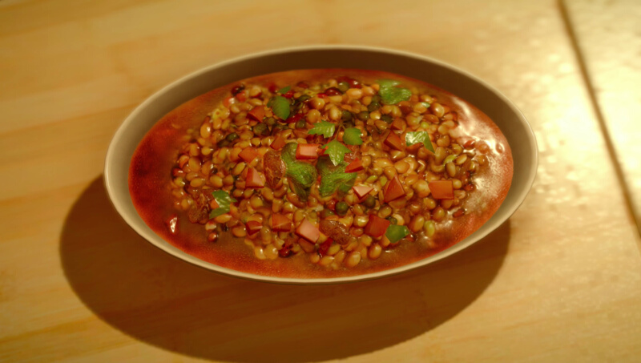

Robust Bean Soup

A beautiful new Recipeh has arrived from the mind of Ignis. This time it's a
lovely bean soup made with killer tomatoes, eos green peas and leiden peppers. Way to go, Ignis.
Ingredients
- Eos Green Peas
- Leiden Pepper
- Killer Tomato
Steps
- Get Ignis to Cooking level 7
- Go to Furloch Farm in Lestallum to buy Eos Green Peas for 30
gil. Alternatively find them at ingredient spots in the Leide and Duscae regions
- Go to the Mini-Mart at Hammerhead, the JM Markets at the
Prairie Outpost and Old Lestallum or the kiosk at the Wiz
Chocobo Post to buy Leiden Pepper for 20 gil. Alternatively find
them at ingredient spots in Leide.
- Go to Fallstar Foods in Lestallum or Old Gobunant's Boat
in Altissia to buy Killer Tomato for 500 gil. Alternatively
they can be recieved as a reward for completing Takka's
Emergency Delivery and Everyone Loves Beans quests
- Let Ignis shine with his new RECIPEH